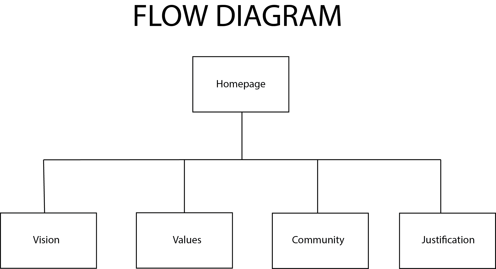

Justification
When designing the layout of our website we kept the words elegance and simplicity at the top of our minds. The layout design of the website is quite simple and userer friendly. The user can easily navigate their way through the website by clicking on the navigation bar and selecting which page they'd like to view. We incorporated nude colors throughout the entire site because those were the original colors used in the brandroadmap. In the footer of the website we've included the contact information and the social media platforms where you can find more content and information about Beyond Pure.
Font names: 'DM Sans', sans-serif, 'Share Tech Mono', monospace
Color codes: Black, Grey
User testing report
Number of Test Users: 3 testers Type: paper prototype
Scenario 1 Visit the Values page and go back to the Home page.Outcome of user testing scenario 1 and useability issues found. Test user #1 had the task to visit the Values page and go back to the Home page of Beyond Pure’s website. He found it difficult at first to find a way to visit other pages from the Home page, however the logo and arrow were the only icons/illustrations on the page, which made it obvious. Eventually it worked to switch pages. Feedback from participant: Make the arrow on the right down corner more obvious. Everything else was clear and the lay-out of the website prototype looked quite simple.
Scenario 2 Go to the Find Us At page with the help of the Drop Down menu and open the podcast on Spotify. Afterwards, go to the Community page with the help of the arrow and not the menu bar. Outcome of user testing scenario 2 and useability issues found Test user #2 had more difficulties with his tasks. Finding the Drop Down menu was as issue, because it only appeared on the second page ‘Who Are We?’ and not immediately on the Home page. The steps afterwards such as visiting the Find Us At page and opening the podcast on Spotify were clear and effortless. Another issue occurred when test user #2 had to execute the second task. He had to visit the Community page with the help of arrows and not the Drop Down bar. It was unclear how he should visit the page, as there were no arrows to go to previous pages. Feedback from participant: Include arrows to go back to previous pages. The Drop Down menu was clear to use, however put it on every page instead of skipping the Home page.
Scenario 3 Visit the Find Us At page and go to the Who Are We page afterwards. Outcome of user testing scenario 3 and useability issues found Test user #3 had the same issue as test user #2. She could visit the Find Us At page without troubles, however visiting the Who Are We page afterwards took more time. She expected to go back to the pages by using the arrows, but was not able to do so. Instead, she used the Drop Down menu to visit the Who Are We page. Feedback from participant: The arrow was a nice idea, however also include an arrow to visit previous pages. Maybe it’s easier to use a sidebar, instead of a Drop Down menu because it’s visible on every page. Right now, I need to use the arrow to go to the next page and then the menu will appear on the second page.
Own recommendation Based on all participant’s feedback and our own recommendation after testing is to add an arrow to visit previous pages. The icon for the Drop Down menu needs to be visible from the Home page, this will make every page more accessible and avoids issues. The lay out of our website looks clean and simple, however it would be great to see more designs by use of a background and to experiment with the use of more colours.